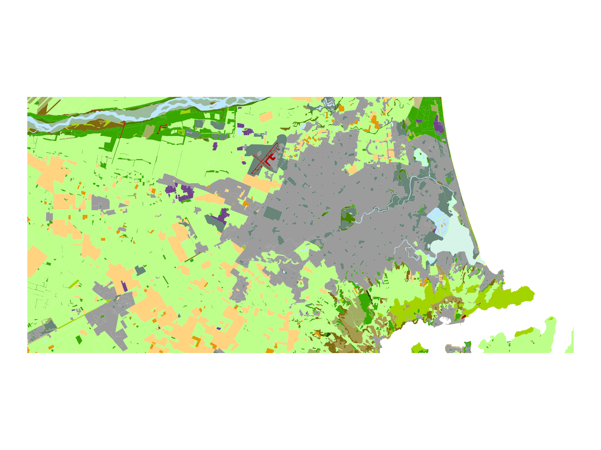

Purpose
The goal of lcdb_symbology is to colour the symbology of
the Land
Cover Database (LCDB) in a way that is consistent with the Manaaki Whenua Landcare
Research (MWLR)’s original symbology. MWLR provide a .lyr file for
use with ArcGIS (or with QGIS via a plugin), but this repo provides a
way to use the same symbology in R or ggplot2 or other non-GIS
software.
Usage
To load the LCDB symbology, use the load_lcdb_symbology
function. This will return a data frame with the following columns:
Class, Colour, and Name. The
Class column contains the class code, the
Colour column contains the colour in HEX format, and the
Name column contains the name of the land cover class.
# load data
landcover_df <- load_lcdb_symbology()Table of colours
Here’s a table of the colours used in the LCDB symbology. Extracted from XML in the original .lyr file.
| Class Code | Colour | HEX Code | Landcover Class |
|---|---|---|---|
| 1 | Built-up Area (settlement) | #9c9c9c | Built-up Area (settlement) |
| 6 | Surface Mines and Dumps | #704489 | Surface Mines and Dumps |
| 5 | Transport Infrastructure | #a80000 | Transport Infrastructure |
| 2 | Urban Parkland/Open Space | #688578 | Urban Parkland/Open Space |
| 10 | Sand or Gravel | #ffff73 | Sand or Gravel |
| 12 | Landslide | #ca7af5 | Landslide |
| 15 | Alpine Grass/Herbfield | #abcd66 | Alpine Grass/Herbfield |
| 16 | Gravel or Rock | #9cba9c | Gravel or Rock |
| 14 | Permanent Snow and Ice | #dbd4ff | Permanent Snow and Ice |
| 20 | Lake or Pond | #bee8ff | Lake or Pond |
| 21 | River | #bee8ff | River |
| 22 | Estuarine Open Water | #d6f5e8 | Estuarine Open Water |
| 30 | Short-rotation Cropland | #ffd37f | Short-rotation Cropland |
| 33 | Orchard Vineyard and Other Perennial Crops | #e69800 | Orchard Vineyard and Other Perennial Crops |
| 40 | High Producing Exotic Grassland | #beff8c | High Producing Exotic Grassland |
| 41 | Low Producing Grassland | #a3d400 | Low Producing Grassland |
| 43 | Tall Tussock Grassland | #e6e68c | Tall Tussock Grassland |
| 44 | Depleted Grassland | #d2d25a | Depleted Grassland |
| 45 | Herbaceous Freshwater Vegetation | #c2ffd6 | Herbaceous Freshwater Vegetation |
| 46 | Herbaceous Saline Vegetation | #def5de | Herbaceous Saline Vegetation |
| 47 | Flaxland | #7af5ca | Flaxland |
| 50 | Fernland | #705c00 | Fernland |
| 51 | Gorse and/or Broom | #7d690f | Gorse and/or Broom |
| 52 | Manuka and/or Kanuka | #8c7922 | Manuka and/or Kanuka |
| 54 | Broadleaved Indigenous Hardwoods | #a8994f | Broadleaved Indigenous Hardwoods |
| 55 | Sub Alpine Shrubland | #b8ab6a | Sub Alpine Shrubland |
| 56 | Mixed Exotic Shrubland | #c4bb89 | Mixed Exotic Shrubland |
| 58 | Matagouri or Grey Scrub | #d4cdae | Matagouri or Grey Scrub |
| 80 | Peat Shrubland (Chatham Is) | #bfcdae | Peat Shrubland (Chatham Is) |
| 81 | Dune Shrubland (Chatham Is) | #d4c27a | Dune Shrubland (Chatham Is) |
| 64 | Forest - Harvested | #a1ad61 | Forest - Harvested |
| 68 | Deciduous Hardwoods | #477f00 | Deciduous Hardwoods |
| 69 | Indigenous Forest | #284600 | Indigenous Forest |
| 71 | Exotic Forest | #38a800 | Exotic Forest |
| 70 | Mangrove | #448989 | Mangrove |
| 0 | Not land | #000000 | Not land |
Examples
Here’s an example of how to use the LCDB symbology in ggplot2. Let’s make a map of Christchurch.
lcdb_colours_vector <- load_lcdb_vector()
# Plot using ggplot2 with scale_fill_manual
ggplot(data = lcdb5_chch) + # lcdb5_chch available in the isaacr package, and it lazy-loads - so just refer to it
geom_sf(aes(fill = as.factor(Class_2018)), color = NA) +
scale_fill_manual(values = lcdb_colours_vector) +
theme_void() +
theme(legend.position = "none")
And another one of Blenheim
# Plot using ggplot2 with scale_fill_manual
ggplot(data = lcdb5_blenheim) +
geom_sf(aes(fill = as.factor(Class_2018)), color = NA) +
scale_fill_manual(values = lcdb_colours_vector) +
theme_void() +
theme(legend.position = "none")